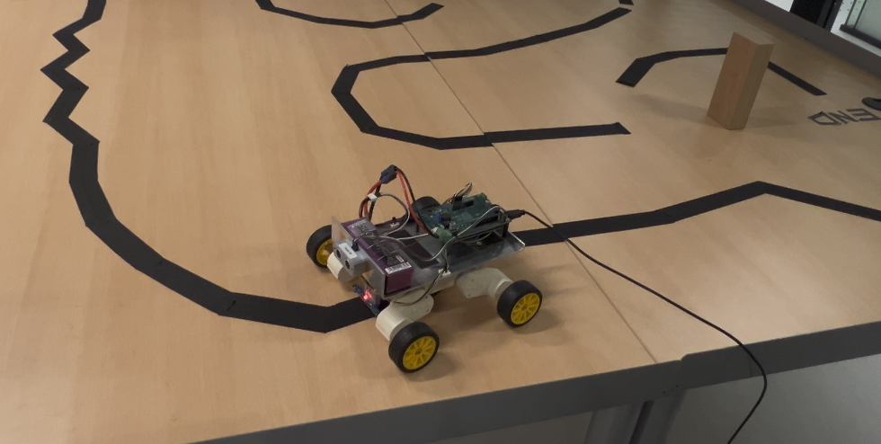

Line following and obstacle detection on a mobile robot
A PID controller written in the Arduino IDE for a rover with infrared line sensors and an ultrasonic distance sensor.
Overview
This project was part of the Mechatronics course (WBIE011-05) at the University of Groningen. The robot itself was pre-built; as students we were tasked with writing and implementing the Arduino code. The code runs a PID controller that keeps the rover on a black line using its infrared sensors, and stops it when the ultrasonic sensor detects an obstacle ahead.

The rover used in the course.
How PID control works
The infrared sensors measure how far the line is from the centre of the robot. That distance is the error, e. Every 20 ms the controller turns the error into a steering correction u, which speeds up one wheel and slows down the other:
- P, proportional: steer harder the further the robot is from the line. Too little and it runs wide on bends; too much and it overshoots and wobbles from side to side.
- I, integral: adds up the error over time. On a long bend, P alone leaves a constant offset; I keeps growing until that offset is gone. Too much I "winds up" and makes the robot swing.
- D, derivative: reacts to how fast the error is changing. It brakes the steering before the robot overshoots, which damps the wobble. Too much D amplifies sensor noise and makes the robot twitchy.
The algorithm
A simplified version of the control loop is below. The line position is a weighted average of the infrared readings, scaled from −1 (line far left) to +1 (line far right). If the line is lost, the robot keeps turning towards where it last saw it.
// Simplified PID line follower with obstacle stop (Arduino)
const int NUM_SENSORS = 5;
const int irPins[NUM_SENSORS] = {A0, A1, A2, A3, A4};
const int TRIG_PIN = 7, ECHO_PIN = 8;
const int ENA = 5, IN1 = 9, IN2 = 10; // left motor
const int ENB = 6, IN3 = 11, IN4 = 12; // right motor
float Kp = 3.0, Ki = 1.5, Kd = 0.2;
const int BASE_SPEED = 150; // PWM, 0-255
const unsigned long DT_MS = 20; // 50 Hz control loop
const float STOP_DISTANCE_CM = 15.0;
float integral = 0, lastError = 0;
unsigned long lastTime = 0;
// Line position from the IR array: -1 (far left) ... 0 (centre) ... +1 (far right)
float readLineError() {
long weighted = 0, total = 0;
for (int i = 0; i < NUM_SENSORS; i++) {
int v = analogRead(irPins[i]); // higher reading = darker = line
weighted += (long)v * (i - 2); // sensor positions -2 ... +2
total += v;
}
if (total < 200) return lastError > 0 ? 1.0 : -1.0; // line lost: keep turning the last way
return (float)weighted / total / 2.0;
}
float readDistanceCm() {
digitalWrite(TRIG_PIN, LOW); delayMicroseconds(2);
digitalWrite(TRIG_PIN, HIGH); delayMicroseconds(10);
digitalWrite(TRIG_PIN, LOW);
unsigned long us = pulseIn(ECHO_PIN, HIGH, 6000); // give up after ~1 m
return us == 0 ? 999.0 : us * 0.0343 / 2.0; // speed of sound, there and back
}
void setMotor(int en, int inA, int inB, int speed) {
speed = constrain(speed, -255, 255);
digitalWrite(inA, speed >= 0);
digitalWrite(inB, speed < 0);
analogWrite(en, abs(speed));
}
void setup() {
int outputs[] = {TRIG_PIN, ENA, IN1, IN2, ENB, IN3, IN4};
for (int pin : outputs) pinMode(pin, OUTPUT);
pinMode(ECHO_PIN, INPUT);
lastTime = millis();
}
void loop() {
unsigned long now = millis();
if (now - lastTime < DT_MS) return; // run the controller at a fixed rate
float dt = (now - lastTime) / 1000.0;
lastTime = now;
if (readDistanceCm() < STOP_DISTANCE_CM) { // obstacle ahead: stop and reset
setMotor(ENA, IN1, IN2, 0);
setMotor(ENB, IN3, IN4, 0);
integral = 0;
return;
}
float error = readLineError();
integral = constrain(integral + error * dt, -10, 10); // clamp to limit wind-up
float derivative = (error - lastError) / dt;
lastError = error;
float u = Kp * error + Ki * integral + Kd * derivative;
int correction = u * BASE_SPEED;
setMotor(ENA, IN1, IN2, BASE_SPEED + correction); // line to the right: left wheel speeds up
setMotor(ENB, IN3, IN4, BASE_SPEED - correction);
}Try it: tune the PID controller
The simulation below runs the same control law on a virtual rover. Drag the sliders or pick a preset and watch how each gain changes the way it drives. The orange trail shows the robot's recent path, and the plot shows the error over the last few seconds.
Things to try: start with P only and notice it drifts to the outside of every bend. Push Kp up until it wobbles, then add Kd to calm it down. Finally add a little Ki and watch the average error drop, then push it too far and watch the robot swing.